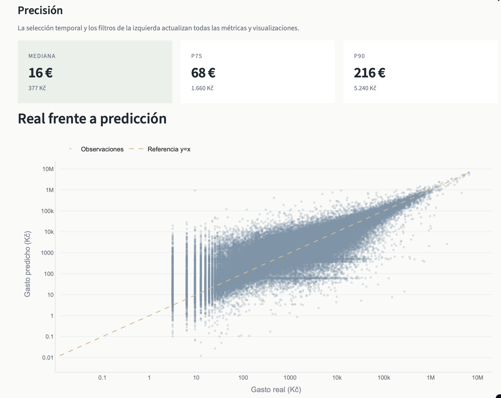

Seznam Advertising Analytics
Predicción del gasto publicitario mensual a partir del comportamiento histórico de clientes y datos relacionales.

01 · PROBLEMA
¿Podemos predecir cuánto gastará un cliente el próximo mes?
El objetivo fue construir un modelo capaz de estimar el gasto publicitario mensual de cada cliente utilizando únicamente información disponible antes del mes que se quiere predecir.
02 · DATA
Datos relacionales reales
El proyecto utiliza el Seznam Advertising Dataset, procedente del CTU Relational Dataset Repository. La estructura original mantiene varias tablas relacionadas con clientes, recargas y actividad publicitaria.
03 · PIPELINE
De datos relacionales a predicción
Datos relacionales → PostgreSQL → SQL → Variables históricas → Modelo predictivo → Evaluación → Dashboard
En PostgreSQL se construyeron agregaciones mensuales, variables de comportamiento histórico, retardos temporales, medidas de variabilidad, gasto máximo, composición por servicio y variables relacionadas con las recargas.
04 · MODEL
Predicción temporal sin fuga de información
El conjunto de entrenamiento utiliza información hasta diciembre de 2014, mientras que el test comienza en enero de 2015. Esta separación temporal permite evaluar el modelo en un escenario más próximo a una predicción futura.
El modelo final fue un HistGradientBoostingRegressor de scikit-learn. El objetivo modelado fue el cambio respecto al gasto del mes anterior y posteriormente se reconstruyó el gasto predicho.
05 · RESULTS
Resultados
El error absoluto mediano fue de 386,49 Kč, equivalente aproximadamente a 15,91 € utilizando la conversión establecida en el proyecto.
06 · INTERPRETACIÓN
Del modelo al comportamiento del negocio
El dashboard permite analizar la evolución del gasto real frente al predicho, la distribución de errores y cómo varía el rendimiento según región y sector.
07 · LIMITACIONES
Qué debe tenerse en cuenta
El rendimiento se ha evaluado sobre una partición temporal concreta del dataset. Los resultados deben interpretarse dentro de las características y periodo disponibles en estos datos.
08 · TECHNOLOGY